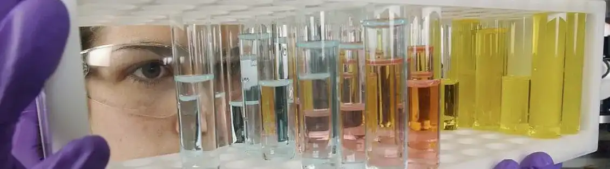
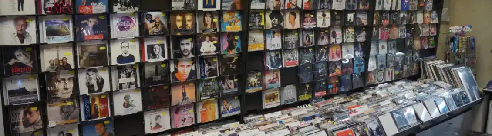

MASSILIA The Marseille of yesterday
The damage to the world
Adolescents around the world have largely integrated new technologies into their daily lives. This enthusiasm quickly spread across the Earth, although it seems even more important in Asian countries as evidenced by the number of scientific articles on this subject from countries such as Japan and Korea.

Older generations at the time would search encyclopedias when they needed information. We can take as an example how technology has changed the way we listen to music. At my home, for example, near Marseille, there was a music store in the 1990s.

This store there I find, that it has a lot of style, that is to say I find that moving to buy a cd or vinyl record had character. The purchase was an investment from the customer’s point of view. Moreover, the craze that created this kind of store was unique at the time. Everyone went to the shop to listen to the CDs via the headphones provided.Today for a little less than 10 years the streaming platforms have closed these stores. The power of these streaming giants have conquered almost everyone. Now only a subscription allows you to listen to all albums anywhere on the planet.Other than the upheaval among music clients, these platforms create an imbalance within SACEM, that is to say the revenues through the right of each artist. I find that technology has changed the way I listen to music, and I would have liked to live in the 90s, because I find this period warm. But other than the negative side, this technology also has advantages.
Technology has benefited many people. Now every artist can express his work via social networks
technological advancement